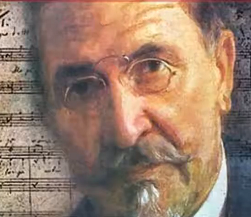

2 Raslo mi je badem drvo
Sous l'amandier que voilÃ
(Šesta Rukovet - 6ème guirlande : 01:54,5 - 03:04,5 )

Badem drvo - Un amandier - Hajduk Veljko - ÄuÄuk Stana
|
|
|
 "Raslo mi je" -Version Mokranjac |
 "Raslo mi je" - Chanté par Zaim ImamoviÄ (1920-1994) |
 "Raslo mi je" - Chanté par Zivan MiliÄ (1937-1983) |
 "Raslo mi je" - Chanté par Zvonko Bogdan (1942) |
NOTES
|
[1] ÄuÄuk Stana i Hajduk Veljko ÄuÄuk Stana se rodila oko 1795. godine u mestu Sikole, kraj Negotina, u porodici doseljenih Hercegovaca. Imala je dve sestre, Stojnu i Stamenu, a dosta kasnije je dobila i brata Mihajla. Iako su joj roditelji živeli u Negotinu, Å¡kolu je zavrÅ¡ila u Beloj Crkvi. Po oÄevoj želji sve tri sestre su u mladosti nosile muÅ¡ku odeÄu, jer nisu imale brata. Stana je bila mala i krhka, zbog Äega je i dobila nadimak ÄuÄuk. Sa Hajduk Veljkom se upoznala u kuÄi negotinskog prote 1812. godine. PriÅ¡la mu je i drsko zapitala: âZar tvoji momci ne znaju Turke ubijati, nego devojaÄke darove krasti?â Veljko je zastao zbunjen, jer sa njim nijedna žena tako nije razgovarala. Brzo su mu odmah objasnili da su njegovi momci poharali nekoliko sela i greÅ¡kom odneli i devojaÄku spremu one koja je stajala pred njim. Zatim ju je Veljko darovao darovima i zaprosio reÄima âSada sam te ja darovao, sada si moja!â. [2] "Hajduk" ÄuÄuk Stana ÄuÄuk Stana je bila mnogo draga Hajduk Veljku. Za ÄuÄuk Stanu se vezuju mnoge priÄe ukljuÄujuÄi i one da se sa Veljkom tukla protiv Turaka, branila Negotin i da je Äak Äetiri rane u tim borbama zadobila: dve na nozi, jednu na ramenu, a jednu, napravljenu turskim jataganom, na potiljku. PuÅ¡kom je baratala kao pravi ratnik, svaku metu pogadala je sa ogromnom preciznoÅ¡Äu, a u sedlu bila sigurna i veÅ¡ta. Hajduk Veljko je poginuo 1813. godine, a on i Stana nisu imali dece. Posle Hajduk Veljkove pogibije, izbegla je i živela u PanÄevu. [3] ÄuÄuk Stana i Kapetan JorgaÄ Posle smrti Hajduk Veljka, Stana se udala za drugog Äuvenog junaka, grÄkog kapetana JorgaÄa (grÄ. Georgakis Nikolau Olimpos). Kapetan JorgaÄ je bio jedan od voÄa HeteristiÄkog ustanka u GrÄkoj. Zajedno sa njim je preÅ¡la da živi prvo u u VlaÅ¡ku, a nakon pokuÅ¡aja Turaka da ih likvidiraju, preÅ¡li su u BukureÅ¡t. ÄuÄuk Stana i kapetan JorgaÄ su dobili troje dece: Milana, Aleksandra i Äerku Jevrosimu. To je bio osnovni razlog da preÄu u Rusiju, a zatim u Hotin. Tu su se nalazile i grupe srpskih ustanika. Posle izbijanja ustanka Heterista 1821. godine, meÄu kojima je bilo i Srba, kapetan JorgaÄ se sa svojih 480 saboraca smestio u manastiru Seku, u severnoj Moldaviji. U toku ratnih operacija bili su opkoljeni jedinicama turske vojske. Izlaz su naÅ¡li u samoubilaÄkom paljenju baruta i eksploziva. Zajedno sa Heteristima u vazduh su odleteli i Turci. ÄuÄuk Stana se 1842. godine zajedno sa decom, preselila u Atinu gde je umrla i sahranjena 1849. godine. |
[1] "Tchoutchouk" Stana et Hajduk Veljko ÄuÄuk Stana est née vers 1795 dans la ville de Sikole, près de Négotine, dans une famille venue d'Herzégovine. Elle avait deux sÅurs, Stojna et Stamena, et beaucoup plus tard, elle eut un frère Mihajlo. Bien que ses parents vivent à Négotine, elle fit ses études à Bela Crkva. Selon le souhait de leur père, les trois sÅurs portaient des vêtements d'homme dans leur jeunesse, car elles n'avaient pas de frère. Stana était petite et fragile, c'est pourquoi on la surnommait "Tchouktchouk" (mot turc ayant ce sens). Elle rencontra Hajduk Veljko en 1812 dans la maison du Pope de Négotine. Elle s'approcha de lui et lui demanda avec effronterie : " Tes hommes ne savent-ils donc pas tuer les Turcs, pour s'en prendre aux dots des filles, comme ils le font? " Veljko était ébahi: aucune femme ne lui avait jamais parlé sur ce ton. On s'empressa de lui expliquer que ses hommes avaient pillé plusieurs villages et avaient également subtilisé la dot de cette jeune fille. Alors Veljko la couvrit de présents et fit sa demande en mariage en ces termes "Maintenant que je t'ai dotée, désormais tu m'appartiens!". [2] Le "haïdouk" ÄuÄuk Stana ÄuÄuk Stana était très attachée à Hajduk Veljko. Il existe de nombreuses histoires liées à son sujet, en partiiculier celles qui la montrent combattant au côté de Veljko contre les Turcs, lors de la défense de Négotine, Elle reçut même quatre blessures dans ces combats: deux à la jambe, une à l'épaule et une à la nuque, faite avec un cimeterre turc. Elle maniait le fusil comme un véritable soldat et faisait mouche à chaque fois. En selle, elle était sûre d'elle-même et d'une grande habileté. Hajduk Veljko mourut en 1813. Lui et Stana n'avaient pas d'enfants. Après la mort de son mari, elle parvint à s' échapper et alla vivre à PanÄevo. [3] ÄuÄuk Stana et le capitaine JorgaÄ Après la mort de Hajduk Veljko, Stana épousa un autre héros célèbre, le capitaine grec JorgaÄ (Georgakis Nikolaou Olympos). C'était l'un des chefs du soulèvement "hétéronomiste" en Grèce. Elle commença par le suivre en en Valachie, puis à Bucarest, après une tentative des Turcs pour les assassiner. ÄuÄuk Stana et le capitaine JorgaÄ eurent trois enfants : Milan, Aleksandar et une fille Jevrosima. Ce fut la principale raison pour laquelle ils s'établirent en Russie, puis à Khotin en Ukraine où vivaient également des groupes d'insurgés serbes. Après le déclenchement du soulèvement hétéronomiste en 1821 (auquel participaient des Serbes), le capitaine JorgaÄ et ses 480 camarades s'installèrent au monastère de Seko, dans le nord de la Moldavie. Au cours de la guerre, ils furent encerclés par des unités de l'armée turque. Ils n'eurent d'autre issue que de se faire sauter avec la réserve de poudre à canon et d'explosifs, entraînant dans la mort de nombreux Turcs. ÄuÄuk Stana s'installa avec ses enfants en 1842 à Athènes où elle mourut et fut enterrée en 1849. |